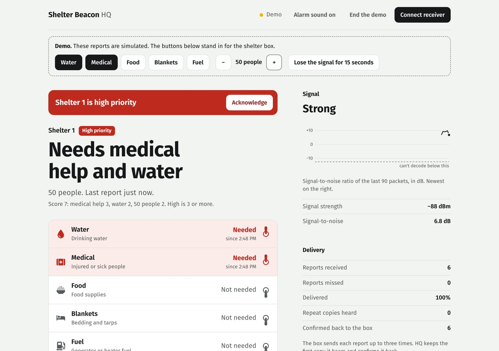

When the phones go down, a shelter can still ask for help.
Shelter Beacon is a wall box with five switches and a dial. A shelter leader flips up what the shelter needs, and it radios headquarters over kilometres with no cell service, no internet and no grid power.
The 3D box needs WebGL. Try the flat demo instead.
In Noto, the shelters that needed help most couldn't say so.
On January 1, 2024, a magnitude 7.6 earthquake hit Japan's Noto Peninsula. Landslides cut off more than a dozen communities, some for over a week. Phones and power were down, so responders couldn't tell which isolated shelter needed what.
Japan's official two-way disaster radio is built for staffed sites and depends on repeaters. It doesn't reach a community hall with thirty people and no trained operator. That gap is what this project is for.
- 12+
communities cut off by landslides, some for more than a week.AFP and Al Jazeera reporting, January 2024
- 31,800
people sheltering across the region at the peak.Contemporary reporting, January 2024
- ≈50%
of residents in the four hardest-hit towns were 65 or older.ICMA PM Magazine, July 2026
Flip a switch. Headquarters knows in about a second.
- The boxTake it apart in 3D: every part, what it does, and why it's there.
- How it worksWhat's in a report, how it survives a bad link, and how headquarters ranks shelters.
- Testing784 packets from the first range test, and what they changed in the design.
- Build logWhat broke, in order, and what each failure taught.
Headquarters reads one sentence per shelter.
The dashboard says what a person would say over a radio: who needs what, how many people, and how urgent. Colour only appears when something needs attention.
A plain score ranks shelters, and anyone can check it by hand. When a shelter becomes high priority, an alarm rings until someone acknowledges it.

What's proven so far, and what isn't.
- 95.7%
of single packets arrived at the edge of range in the first field test. Sending each report three times should lift that to about 99.99%, which the next test will check.Range test 1, October 18, 2026: 602 packets below −100 dBm
- −122 dBm
was the weakest signal still decoded, 7 dB above the radio's calculated limit.Range test 1
- ≈ $107
in parts for one shelter box, bought at single-unit prices.Project parts list
- Not yet
measured: range against distance. The first test didn't log GPS. A GPS-tagged test is next.See the testing page